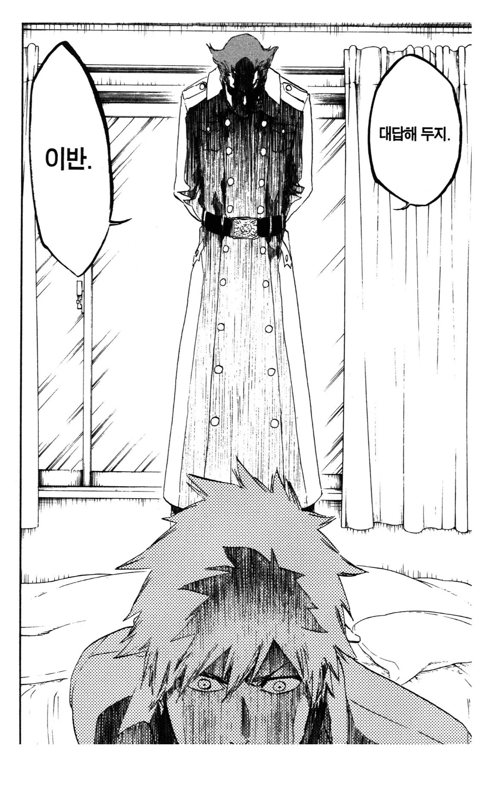
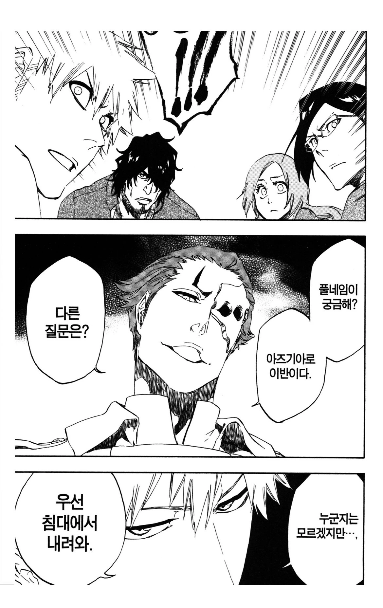
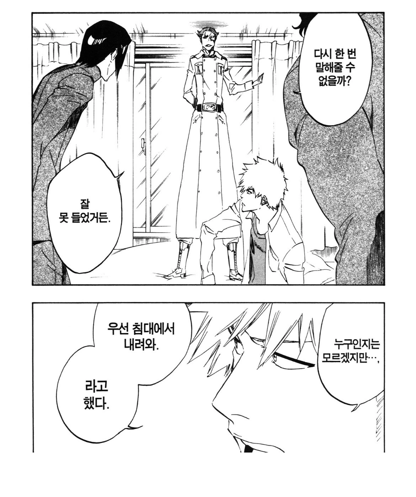
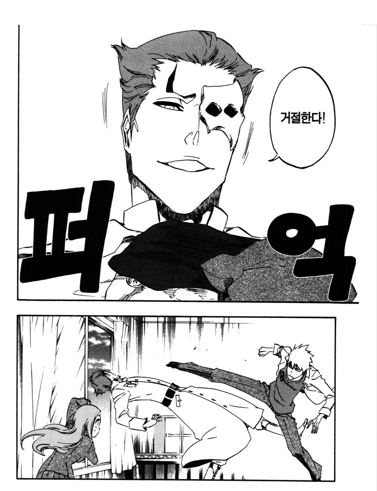

호로새끼가 신발신고 침대 올라감




호로새끼가 신발신고 침대 올라감
"그럼 저녁은 우리끼리 먹을게"
퀸시아니야???
어디 퀸씹니까?
마 니 퀸시존스햄 모리나
퀸 시존스 성님의 구성진 가락은 잘 알고 있 읍니다
퀸시 부하가 된 아란칼임
부럽다. 퀸시존스햄 프로듀싱 씨게 받으면 곡 기깔나게 뽑겠네
침대에 신발신고 올라간 순간부터 호로새끼가 맞음
천재임?
저러니 호로새끼 소리 듣지
ㅋㅋㅋㅋㅋㅋㅋㅋㅋㅋㅋ
창문 닫혀있다가 오리히메가 막컷에서 창문 싹 여는게 킬포
블리치가 이런 개그감이 있어 ㅋㅋ
퀸시도 반응 못한 발차기를 예측하고 창문 여는 오리히메 ㄷㄷ
역시 정실
내 앞에 넌 예언자인가?
호로새끼들도 침대에 신발벗고 올라감ㅋㅋ
쟤 능력도 없지 않나
개쌍늠의 호로자슥
" ㅅㅂ 나 유럽 사람이야 "